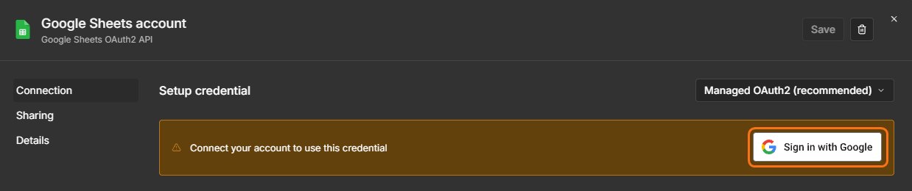
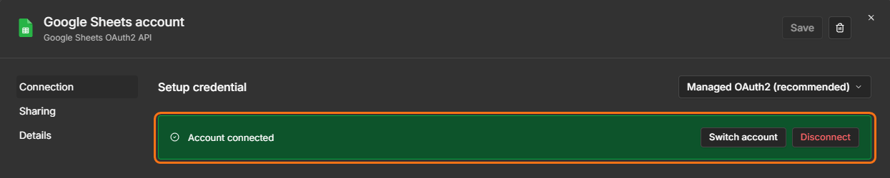
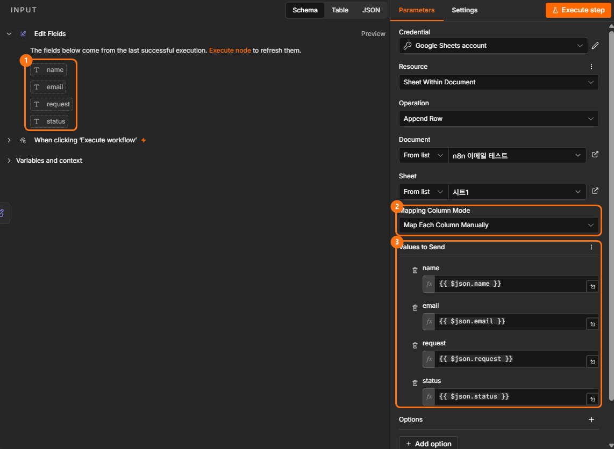
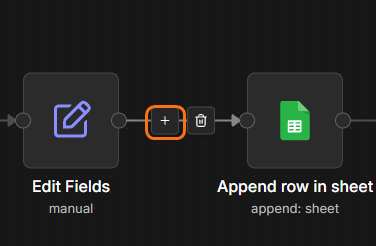
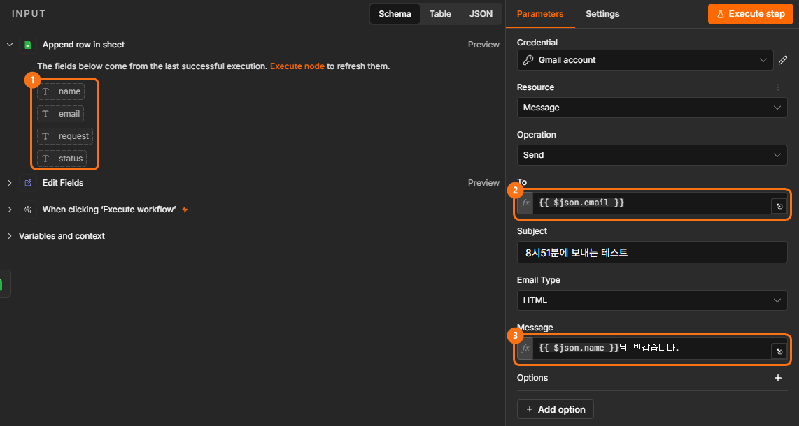
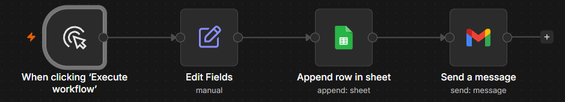

DAY 03AI 에이전트 · 외부 서비스 연결 실습
Google Sheets와 이메일 연결하기
오늘부터 n8n 밖의 실제 서비스와 데이터를 주고받습니다. 고객 정보를 Google Sheets에 저장하고, 이름이 자동으로 바뀌는 확인 이메일을 Gmail로 보내 봅니다. 그리고 같은 Workflow를 데이터만 바꿔 다른 업무에도 쓸 수 있다는 것까지 살펴봅니다.
1.수업 구성
DAY 02에서는 n8n 안에서만 데이터를 옮겼습니다. 오늘은 n8n이 Google Sheets와 Gmail을 연결하는 중심 역할을 합니다. 새로 배우는 것은 "서비스를 연결하는 방법(Credential)"이고, 데이터를 연결하는 방법(Mapping)은 DAY 02와 똑같습니다.
초급
따라하기 실습
n8n · Google Sheets · Gmail
Google 계정
고객 정보를 Google Sheets에 저장하고, 그 정보로 이름이 자동으로 바뀌는 확인 이메일을 보내는 Workflow를 완성한다. 같은 구조를 다른 업무에도 다시 쓸 수 있다는 것을 안다.
2.오늘 배우는 내용 & 전체 흐름
1교시
Google Sheets와 n8n 연결하기
- 1Credential 이해하기
- 2실습용 Google Sheet 만들기
- 3Sheets에 고객 정보 저장하기
- 4Sheets 데이터 읽어오기
2교시
Gmail 연결과 업무 자동화 완성
- 5Gmail로 첫 이메일 보내기
- 6이름이 바뀌는 이메일 만들기
- 7저장 + 이메일 한 번에 연결하기
- 8같은 Workflow, 다른 활용 살펴보기
오늘 내용은 세 가지로 나뉩니다
모두가 수업 안에 완성합니다. Manual Trigger → Edit Fields → Google Sheets → Gmail
같은 구조를 어디에 쓸 수 있는지 살펴봅니다. 직접 만들지 않아도 됩니다.
필수 실습을 일찍 끝낸 분만 선택해서 혼자 만들어 봅니다.
오늘 집중할 내용
3.지난 시간 복습 & 달라지는 점
1교시 · Google Sheets와 n8n 연결하기
Manual Trigger → Edit Fields → Edit Fields → 결과 확인
n8n → Google Sheets → Gmail
외부 서비스를 연결한다는 것
"고객이 신청하면 고객 정보를 Google Sheets에 적고 확인 이메일을 보낸다"는 업무가 있다고 해 봅시다.
신청 내용 확인 → Sheets 열기 → 이름 입력 → 이메일 입력 → 신청 내용 입력 → Gmail 열기 → 이메일 작성 → 발송
신청 데이터 → Google Sheets 저장 → Gmail 발송
사람이 프로그램을 하나씩 여는 대신 n8n이 각 서비스를 연결해 데이터를 전달합니다.
4.Credential — 서비스 연결 허락
Credential (연결 정보)
n8n이 내 Google 계정을 쓸 수 있도록 연결해 주는 인증 정보입니다. Google Sheets Node를 추가했다고 바로 내 시트를 쓸 수 있는 것이 아니라, 먼저 n8n과 내 Google 계정을 연결해야 합니다.
비유하자면: 집 비밀번호를 알려주는 것이 아니라, 택배 기사님에게 현관 출입 카드를 발급해 주는 것과 같습니다. n8n에 Google 비밀번호를 적지 않고, Google에 로그인해서 "이 정도는 써도 된다"고 허락만 합니다.
연결은 이 네 단계면 끝납니다
실제로 누르는 곳은 6번 실습에서 함께 봅니다. 한 번 만든 Credential은 다른 Node에서 고르기만 하면 됩니다.
오늘 연결은 n8n Cloud 기준입니다. DAY 02에서 소개한 Docker 설치형 n8n은 이 간편 로그인이 없어 별도 설정이 필요하므로, 오늘 실습은 Cloud에서 진행하세요.
5.Google Sheet 준비하기
Google Sheets는 표 형태로 데이터를 쌓을 수 있어서 자동화 실습에 많이 씁니다. 고객 문의, 신청자 관리, 콘텐츠 관리처럼 쓰임새가 다양합니다.
Google Sheets의 구조
| name | request | status | |
|---|---|---|---|
| 김민지 | example@email.com | 강의 문의 | 신규 |
↑ 색칠된 가로 한 줄 전체가 Row 하나입니다. 새 고객이 들어오면 새 Row가 추가됩니다.
따라하기실습용 시트 만들기
- Google Sheets(
sheets.google.com)를 열고 빈 스프레드시트를 누릅니다. - 왼쪽 위 제목 없는 스프레드시트를 눌러
AI_AGENT_DAY03으로 바꿉니다. - 아래쪽 탭 시트1을 두 번 눌러
customer로 바꿉니다. - A1 칸을 누르고, 아래 내용을 복사해 붙여 넣습니다. 네 칸에 한 번에 들어갑니다.
1행 A~D 칸에 name email request status가 한 칸씩 들어가면 성공입니다.
6.실습: Sheets에 데이터 저장
필수 실습
오늘 처음 만들 Workflow입니다. 테스트용 고객 정보를 만들어 실제 스프레드시트에 저장합니다.
Workflow 시작
테스트용 고객 정보 만들기
고객 정보를 실제 시트에 저장
STEP 1Workflow 만들고 고객 정보 준비하기
- n8n 왼쪽 위 + → Workflow를 눌러 새 Workflow를 만듭니다.
- 왼쪽 위 이름(My workflow)을 눌러
DAY03_Google_Sheets로 바꿉니다. - 가운데 Add first step → 오른쪽 목록에서 Trigger manually를 고릅니다.
- Manual Trigger 오른쪽 + →
edit검색 → Edit Fields (Set)를 고릅니다. - Add Field를 네 번 눌러 아래 표대로 채웁니다. email에는 자신의 이메일 주소를 넣습니다.
| Name (이름표) | Value (값) |
|---|---|
name | 김민지 |
email | 자신의 이메일 주소 |
request | AI Agent 과정에 대해 문의드립니다. |
status | 신규 |
Name은 시트 1행의 제목과 대소문자까지 똑같이 맞춰 두면 다음 단계가 쉬워집니다.
- Execute step을 누릅니다.
[ Manual Trigger ] → [ Edit Fields ]
오른쪽 OUTPUT에 네 값이 보이면 성공입니다.
name : 김민지 email : 내 이메일 request : AI Agent 과정에 대해 문의드립니다. status : 신규
STEP 2Google Sheets Node 추가하고 계정 연결하기
- Edit Fields 설정 창을 닫고, Node 오른쪽 + →
sheets검색 → Google Sheets를 고릅니다. - Actions 목록에서 Append row in sheet(행 추가)를 고릅니다.
 크게 보기
크게 보기 - 맨 위 Credential to connect with 칸을 누르고 Create new credential을 고릅니다.
- Sign in with Google을 누릅니다.

- 새 창에서 내 Google 계정을 고르고, 권한 화면에서 계속 · 허용을 누릅니다.

창이 닫히고 Credential 칸에 연결된 계정 이름이 보이면 성공입니다. 한 번 만든 연결은 다른 Node에서 고르기만 하면 됩니다.


작업이 여러 개 보이지만, 오늘은 하나만 씁니다
| 작업 이름 | 하는 일 |
|---|---|
| Append row in sheet ← 오늘 선택 | 기존 데이터 아래에 새 줄 추가 |
| Append or update row in sheet | 같은 줄이 있으면 고치고, 없으면 추가 |
| Update row in sheet | 이미 있는 줄 고치기 |
| Get row(s) in sheet | 저장된 줄 가져오기 (8번에서 써 봄) |
| Create sheet | 새 탭 만들기 |
Append row in sheet를 고르는 이유 — 새로운 신청이나 문의가 들어올 때마다 기존 데이터는 그대로 두고 아래에 한 줄씩 쌓기 위해서입니다.
STEP 3저장할 위치 고르기
- 어느 파일의 어느 탭에 저장할지 아래 표대로 고릅니다.
| 항목 | 설정 |
|---|---|
| Resource | Sheet Within Document (기본값) |
| Operation | Append Row (기본값) |
| Document | From list → AI_AGENT_DAY03 |
| Sheet | From list → customer |
[ Manual Trigger ] → [ Edit Fields ] → [ Google Sheets ]
아직 실행하지 않습니다. 시트의 열과 값을 짝짓는 일은 바로 아래 7번에서 합니다.
7.Mapping — 열과 데이터 연결
필수 실습
이제 가장 중요한 단계입니다. 시트의 열(name, email, request, status)과 n8n의 데이터를 짝지어 연결합니다. DAY 02에서 배운 Data Mapping과 같은 원리입니다.
STEP 4열마다 값 연결하기
- Google Sheets 설정에서 Mapping Column Mode를 Map Each Column Manually(열마다 직접 연결)로 고릅니다.
- 아래 Values to Send에 시트의 열 이름 네 칸이 나타납니다. 왼쪽 INPUT에서 같은 이름의 값을 각 칸으로 끌어다 놓습니다.

크게 보기① 왼쪽 INPUT의 값을 ③ Values to Send 칸으로 끌어다 놓습니다. ② Mapping Column Mode는 Map Each Column Manually. 파일 · 탭 이름은 내 것으로 보입니다.

| 시트 열 | 칸에 들어갈 값 |
|---|---|
| name | {{ $json.name }} |
{{ $json.email }} | |
| request | {{ $json.request }} |
| status | {{ $json.status }} |
Map Automatically(자동 연결)를 고르면 이름이 똑같은 것끼리 알아서 연결됩니다. 편하지만 오늘은 원리를 눈으로 보기 위해 직접 연결합니다.
STEP 5실행하고 시트 확인하기
- 설정 창을 닫고, Canvas 아래쪽 주황색 Execute 버튼을 누릅니다.
- Google Sheets의
AI_AGENT_DAY03파일을 열어customer탭을 봅니다.
2행에 아래처럼 한 줄이 들어가면 성공입니다. n8n에서 만든 데이터가 실제 외부 서비스까지 전달되었습니다.
name | email | request | status 김민지 | 내 이메일 | AI Agent 과정에 대해 문의드립니다. | 신규
STEP 6데이터만 바꿔서 다시 실행하기
- Edit Fields를 열어 name을
박하늘, request를수업 일정이 궁금합니다.로 바꿉니다. - 설정 창을 닫고 주황색 Execute 버튼을 다시 누릅니다.
김민지 줄은 그대로 있고, 그 아래 3행에 박하늘 줄이 새로 생기면 성공입니다.
김민지 | 내 이메일 | AI Agent 과정에 대해 문의드립니다. | 신규 박하늘 | 내 이메일 | 수업 일정이 궁금합니다. | 신규
핵심 — Workflow는 그대로 반복해서 쓰고, 데이터만 계속 바뀝니다. 이것이 자동화의 힘입니다.
8.실습: Sheets 데이터 읽어오기
Google Sheets는 저장만 하는 곳이 아닙니다. 저장된 데이터를 다시 n8n으로 가져올 수도 있습니다. 방향이 반대가 됩니다.
n8n → Google Sheets
Google Sheets → n8n
따라하기시트의 줄 가져오기
- 새 Workflow를 만들고 이름을
DAY03_Sheets_Read로 바꿉니다. - 가운데 Add first step → Trigger manually
- 오른쪽 + → Google Sheets → Get row(s) in sheet를 고릅니다.
 크게 보기
크게 보기 - 아래 표대로 고릅니다. Credential은 6번에서 만든 연결을 고르기만 하면 됩니다.
| 항목 | 설정 |
|---|---|
| Credential to connect with | 6번에서 만든 Google Sheets 연결 |
| Document | From list → AI_AGENT_DAY03 |
| Sheet | From list → customer |
- Execute step을 누릅니다.
[ Manual Trigger ] → [ Google Sheets: Get row(s) ]
OUTPUT 위에 2 items가 보이고, 김민지 · 박하늘 두 줄이 나오면 성공입니다. 시트에 있던 데이터가 이제 다음 Node가 쓸 수 있는 Output이 되었습니다.
확인 문제
Q1시트에 데이터를 넣을 때 n8n은 데이터를 보내는가, 받는가?답 보기
보냅니다. 읽어 올 때는 반대로 받습니다.
Q2시트의 열과 n8n 데이터를 연결하는 과정은?답 보기
Mapping입니다.
Q3새 고객이 들어올 때마다 Workflow를 새로 만들어야 하는가?답 보기
아닙니다. 같은 Workflow에 데이터만 바뀌어 들어오면 됩니다.
9.Gmail 연결하고 첫 이메일
2교시 · Gmail 연결과 업무 자동화 완성
필수 실습
목표를 하나 더합니다. "고객 정보를 시트에 저장한 뒤 고객에게 확인 이메일을 보낸다." 두 개의 외부 서비스가 하나의 Workflow에 연결됩니다.
Gmail Node — 오늘은 "이메일 보내기"만
Gmail Node로 Gmail의 여러 기능을 쓸 수 있습니다. 오늘은 Send a message(메시지 보내기)를 씁니다. 기본으로 채우는 칸은 네 가지입니다.
* 필요하면 참조(CC)·숨은 참조(BCC)·첨부파일 옵션도 쓸 수 있습니다.
따라하기고정값으로 첫 이메일 보내기
이번에는 앞 Node의 데이터를 쓰지 않고, 받는 사람 · 제목 · 본문을 직접 입력하는 고정값으로 테스트합니다.
- 새 Workflow를 만들고 이름을
DAY03_Gmail로 바꿉니다. - 가운데 Add first step → Trigger manually
- 오른쪽 + →
gmail검색 → Gmail → Send a message를 고릅니다. 크게 보기
크게 보기 - Credential to connect with → Create new credential → Sign in with Google → 내 계정 고르고 허용. Google Sheets 때와 같은 순서입니다.
- 아래 표대로 채웁니다.
| 항목 | 설정 |
|---|---|
| To | 자신의 이메일 주소 |
| Subject | n8n 이메일 테스트 |
| Email Type | Text |
| Message | n8n에서 보낸 첫 번째 자동 이메일입니다. |
- Execute step을 누릅니다.
[ Manual Trigger ] → [ Gmail ]
내 메일함에 "n8n 이메일 테스트" 메일이 실제로 오면 성공입니다.
받은 메일 맨 아래에 "This email was sent automatically with n8n" 같은 문구가 붙을 수 있습니다. Gmail Node 아래 Add option → Append n8n Attribution을 끄면 사라집니다.
10.실습: 이름이 바뀌는 이메일
필수 실습
지금 이메일은 항상 같은 내용을 보냅니다. 하지만 실제 업무에서는 받는 사람마다 내용이 달라져야 합니다.
고정 문장 + 변하는 데이터
자동화에서 가장 많이 쓰는 방식입니다. 바뀌지 않는 문장은 직접 쓰고, 바뀌는 부분만 앞 Node에서 가져옵니다.
"[이름]님, 안녕하세요. 문의가 정상적으로 접수되었습니다. … 확인 후 안내드리겠습니다."
STEP 1Gmail 앞에 고객 정보 끼워 넣기
- 9번에서 만든
DAY03_GmailWorkflow에서, Manual Trigger와 Gmail 사이 연결선에 마우스를 올립니다. - 연결선 가운데 나타나는 +를 누르고 Edit Fields (Set)를 고릅니다.

크게 보기연결선에 마우스를 올리면 +와 휴지통이 나타납니다. - Add Field로 아래 세 칸을 만듭니다.

| Name | Value |
|---|---|
name | 김민지 |
email | 자신의 이메일 주소 |
request | AI Agent 과정에 대해 문의드립니다. |
- Execute step을 누릅니다. 이래야 다음 Gmail의 INPUT에 값이 보입니다.
[ Manual Trigger ] → [ Edit Fields ] → [ Gmail ]
STEP 2문장은 쓰고, 바뀌는 값은 끌어다 놓기
- Gmail을 엽니다. 왼쪽 INPUT에 name · email · request가 보입니다.
- To 칸의 내 주소를 지우고, INPUT의 email을 끌어다 놓습니다.
- Subject에
문의가 정상적으로 접수되었습니다.를 직접 씁니다. - Message 칸에 바뀌지 않는 문장을 쓰고, 이름 · 문의 내용 자리에 INPUT의 name · request를 끌어다 놓습니다.
| 항목 | 완성된 모습 |
|---|---|
| To | {{ $json.email }} |
| Subject | 문의가 정상적으로 접수되었습니다. |
| Message | {{ $json.name }}님, 안녕하세요. |
끌어다 놓으면 칸 안에 {{ $json.name }} 같은 표시가 생깁니다. 앞 Node에서 name 값을 가져오라고 n8n이 자동으로 만든 표시이니, 외우거나 직접 타이핑할 필요는 없습니다. 칸 아래 미리보기에 실제 이름(김민지)이 보이면 맞게 놓은 것입니다.
- Execute step을 누릅니다.
메일함에 "김민지님, 안녕하세요."로 시작하고 문의 내용이 들어간 메일이 오면 성공입니다. Edit Fields의 name을 다른 이름으로 바꿔 한 번 더 실행해 보세요.
11.실습: 고객 문의 접수 자동화
필수 실습
지금까지 만든 것을 하나로 연결합니다. 이제 하나의 데이터를 여러 서비스가 함께 씁니다.
테스트 데이터
| name | 자신의 이름 |
| 자신의 이메일 주소 | |
| request | AI Agent 수업 신청 방법이 궁금합니다. |
| status | 신규 |
따라하기Sheets Workflow에 Gmail 붙이기
두 Workflow를 합치는 기능을 쓰는 것이 아닙니다. 6번에서 만든 Sheets Workflow 끝에 Gmail을 하나 더 붙이는 것입니다.
- 왼쪽 메뉴 Overview에서
DAY03_Google_Sheets를 눌러 다시 엽니다. - Edit Fields를 열어 값을 위 테스트 데이터로 바꿉니다.
- Google Sheets 오른쪽 + → Gmail → Send a message를 고르고, Credential은 9번에서 만든 Gmail 연결을 고릅니다.
- 10번과 같은 방법으로 아래 표대로 채웁니다.
| 항목 | 완성된 모습 |
|---|---|
| To | {{ $json.email }} |
| Subject | 문의가 정상적으로 접수되었습니다. |
| Email Type | Text |
| Message | {{ $json.name }}님, 안녕하세요. |


크게 보기INPUT에 값이 안 보이면
지금 Gmail 바로 앞은 Google Sheets입니다. 보통은 Sheets에 저장한 name · email 같은 값이 INPUT에 그대로 보이지만, 보이지 않으면 INPUT 위쪽 Node 이름 칸을 눌러 Edit Fields로 바꾼 뒤 거기서 끌어다 놓으세요. 칸 안에 {{ $('Edit Fields').item.json.email }}처럼 조금 길게 들어가도 정상입니다.
- 설정 창을 닫고 Canvas 아래쪽 주황색 Execute 버튼을 누릅니다.
[ Manual Trigger ] → [ Edit Fields ] → [ Google Sheets ] → [ Gmail ]


크게 보기① 시트 customer에 새 줄이 생기고, ② 메일함에 "문의가 정상적으로 접수되었습니다." 메일이 오면 성공입니다. 둘 다 확인하세요.
데이터는 어떻게 이동했을까?
데이터 생성name · email · request · status
name → name 열
email → email 열
request → request 열
status → status 열
email → 받는 사람
name → 이메일 본문
request → 이메일 본문
하나의 데이터가 여러 Node에서 서로 다른 용도로 쓰이고 있습니다.
12.필요한 데이터를 찾는 습관
Google Sheets Node를 지나면 데이터가 사라질까요? 아닙니다. 다만 Node마다 내보내는 데이터의 모양이 다를 수 있어서, 각 Node의 실제 OUTPUT을 확인하는 습관이 중요합니다.
필요한 값이 안 보일 때 — 바로 직접 입력하지 않기
데이터는 꼭 바로 앞 Node에서만 가져와야 하는 것이 아닙니다. INPUT 위쪽 Node 선택 목록에서 앞쪽 Node를 고르면 그 Node의 값도 끌어다 쓸 수 있습니다.
실습: 데이터가 바뀌어도 동작하는지 확인하기
Edit Fields의 값만 바꿔 두 번 실행하고, 매번 시트와 메일함을 확인합니다.
테스트 1
name : 박민수
request : 환불 규정이 궁금합니다.테스트 2
name : 이하늘
request : 수업 시간을 변경하고 싶습니다.Workflow는 고치지 않았는데 결과 내용만 바뀐다면 변하는 데이터가 제대로 연결된 것입니다. 이 "구조는 그대로, 데이터만 바뀐다"는 감각을 15번에서 한 걸음 더 넓혀 봅니다.
13.문제 해결: 세 가지로 나누기
값이 비어 오류가 났을 때 — 찾는 순서
예를 들어 Gmail에서 "받는 사람이 비어 있다"는 오류가 났다면, 아래 순서로 원인을 좁혀 갑니다. Edit Fields의 이름표가 email에서 다른 이름으로 바뀌어 Gmail이 값을 못 찾는 경우가 많습니다.
오류는 크게 세 종류
외부 서비스를 연결하면 오류 종류도 많아집니다. 먼저 어떤 종류의 문제인지 나누면 찾아볼 범위가 확 줄어듭니다.
연결 문제
Google 계정 · Credential 관련
- · 서비스에 접근할 수 없음
- · 인증 필요
- · 권한 부족
데이터 문제
Node 사이로 전달되는 값 관련
- · email 값이 없음
- · 잘못된 열에 연결함
- · 필요한 Field를 찾을 수 없음
설정 문제
Node의 작업 설정 관련
- · 다른 스프레드시트를 고름
- · 다른 탭(Sheet)을 고름
- · 원하지 않는 작업(Operation)을 고름
혼자 해결이 안 되면 ChatGPT와 함께
오류 메시지를 외우지 않아도 됩니다. 지금 화면과 원하는 결과를 설명하면 해결 방법을 함께 찾을 수 있습니다.
문제 해결 루틴
Google 연결이 안 될 때도 같은 루틴으로 해결합니다. ① 단계에서 Credential 화면까지는 정상인지, Node 실행에서 막히는지부터 나눠 보세요.
14.테스트 데이터와 Node 이름
연습할 때는 실제 고객 정보를 쓰지 않기
자동화 실습에서는 실제 고객의 개인정보를 쓰지 않습니다. 잘못 연결하면 엉뚱한 사람에게 이메일이 실제로 발송될 수 있기 때문입니다.
충분히 테스트해서 제대로 동작하는 것을 확인한 뒤에 실제 업무에 적용합니다.
Workflow가 길어지면 읽는 법
Manual Trigger → Edit Fields → Google Sheets → Gmail(고객) → Gmail(담당자)처럼 길어지면 세 가지 기준으로 읽습니다.
Node 이름을 역할로 바꾸기
같은 종류의 Node가 여러 개면 n8n은 뒤에 숫자를 붙입니다. 나중에 보면 알아보기 어렵습니다. Node를 선택하고 F2를 누르거나 이름을 눌러 바꿉니다.
Edit Fields · Edit Fields1
Google Sheets · Google Sheets1
Gmail · Gmail1
고객 정보 생성 · 문의 내역 저장
고객 확인 메일 · 담당자 알림 메일
Workflow는 만드는 것뿐 아니라 나중에 다시 읽을 수 있어야 합니다. 이름을 바꿔도 이미 끌어다 놓은 연결은 n8n이 알아서 맞춰 줍니다.
15.같은 Workflow, 다른 활용
활용 예시 · 살펴보기만 해도 됩니다
오늘 만든 Manual Trigger → Edit Fields → Google Sheets → Gmail은 고객 문의에만 쓰는 구조가 아닙니다. 아래 세 가지는 Node는 똑같고, 준비하는 데이터와 메일 내용만 다릅니다. 오늘 이 세 가지를 모두 만들 필요는 없습니다.
교육 신청 관리
신청자 정보를 명단에 쌓고, 신청 완료 안내를 보냅니다.
준비할 데이터
Sheets → 신청자 명단에 한 줄 추가
Gmail → 신청자에게 "신청이 완료되었습니다"
업무 요청 접수
동료의 업무 요청을 목록에 쌓고, 접수 완료 안내를 보냅니다.
준비할 데이터
Sheets → 업무 요청 목록에 한 줄 추가
Gmail → 요청자에게 "요청이 접수되었습니다"
상담 · 예약 신청
상담이나 예약 신청을 기록하고, 신청 확인 안내를 보냅니다.
준비할 데이터
Sheets → 상담 · 예약 기록에 한 줄 추가
Gmail → 신청자에게 "신청이 접수되었습니다"
| 세 가지 모두 똑같은 것 | 상황마다 바뀌는 것 | |
|---|---|---|
| Node 구성 | Manual Trigger → Edit Fields → Google Sheets → Gmail | — |
| Edit Fields | 데이터를 준비한다 | Field 이름과 값 |
| Google Sheets | Append row in sheet로 한 줄 추가 | 시트의 열 제목 |
| Gmail | email을 받는 사람으로 연결 | 제목과 본문 문장 |
핵심 — 자동화는 매번 새로운 Node를 배우는 것이 아니라, 배운 Node 조합을 상황에 맞게 다시 쓰는 것입니다.
16.빠른 수강생 도전 (선택)
빠른 수강생 도전 · 필수 아님
11번 필수 실습을 모두 완료했다면, 15번의 활용 세 가지 중 하나를 골라 직접 Workflow를 만들어 보세요. 시간이 남을 때만 하면 되고, 못 해도 괜찮습니다.
- · Manual Trigger · Edit Fields · Google Sheets · Gmail만 사용
- · 새로운 Node는 추가하지 않기
- · 시트에 열 제목(1행)을 먼저 만들어 두기
- · 받는 사람은 자신의 이메일로 테스트
- · 어떤 데이터를 준비해야 할까?
- · 시트에는 어떤 열을 만들까?
- · 메일의 받는 사람은 어떤 데이터와 연결할까?
- · 메일 본문에는 어떤 데이터를 넣을까?
* 처음부터 새로 만들기보다, 11번 Workflow를 복제(Duplicate)한 뒤 데이터와 메일 문장만 바꾸면 더 빠릅니다.
17.오늘 내용 정리 & 다음 수업
오늘의 핵심 개념
오늘 배운 용어
| 용어 | 뜻 |
|---|---|
| Credential | n8n이 내 Google 계정 같은 외부 서비스를 쓰도록 연결해 주는 인증 정보 |
| Spreadsheet / Sheet | Google Sheets 문서 파일 하나 / 그 안의 탭 하나 |
| Column / Row | 세로 방향 항목(열) / 가로 한 줄 데이터 한 건(행) |
| Append row in sheet | 시트 맨 아래에 새 행 추가 |
| Get Row(s) | 시트에 저장된 행 가져오기 |
| Mapping | 앞 Node의 데이터를 다음 Node의 입력 칸에 끌어다 연결하는 것 |
| 고정값 / 변하는 값 | 직접 입력한 값 / 실행할 때마다 데이터에 따라 달라지는 값 |
스스로 확인하기
먼저 답을 떠올린 뒤 눌러서 확인하세요.
Q1Credential은 어떤 역할을 하는가?답 보기
n8n이 내 Google Sheets·Gmail 같은 외부 서비스에 접근해도 된다고 허락한 연결 정보입니다. 한 번 만들면 여러 Node에서 골라 쓸 수 있습니다.
Q2Gmail의 받는 사람을 매번 직접 입력하지 않으려면?답 보기
To 칸에 앞 Node의 email 값을 끌어다 연결(Mapping)합니다.
Q3Credential 오류와 Mapping 오류는 어떻게 다른가?답 보기
Credential 오류는 서비스에 접근 자체를 못 하는 연결 문제(인증 필요, 권한 부족)이고, Mapping 오류는 접근은 되지만 필요한 값이 없거나 잘못된 칸에 연결된 데이터 문제입니다.
Q4Google Sheets에서 가져온 데이터를 다음 Node에서 다시 쓸 수 있는가?답 보기
쓸 수 있습니다. Get row(s)로 가져온 데이터는 다른 Node의 Output과 똑같이 다음 Node의 Input이 됩니다.
오늘까지 배운 내용으로 데이터를 준비하고 → 저장하고 → 메일로 보내기까지 할 수 있고, 이 구조 하나로 교육 신청 · 업무 요청 · 상담 · 예약 신청처럼 여러 업무를 처리할 수 있습니다. 다음은 시작 방법을 넓힐 차례입니다.
내가 실행 버튼을 누르는 대신 신청 폼이 들어올 때 · 메일이 올 때 · 정해진 시간이 될 때 저절로 시작되는 자동화를 여러 개 만듭니다. 시트 · Gmail에 캘린더 · 드라이브까지 함께 씁니다.